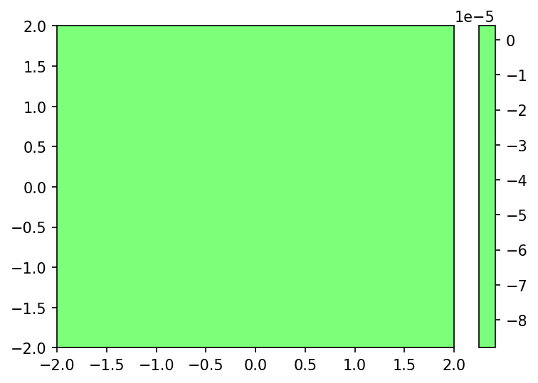

He2 PDFT Inversion - WuYang¶
[1]:
import numpy as np
import matplotlib.pyplot as plt
from CADMium import Pssolver, Psgrid, Partition, Inverter
Perform PDFT Calculation.
Code should run as it is but for idential calculations increase to grid size to: [7,12,12]
[17]:
a = 3.5
#Nuclear charge for fragments A and B
Za, Zb = 2,2
#Set polarization 1-Unpolarized, 2-Polarized
pol = 1
#Fragment a electrons [alpha, beta]
Nmo_a = [[1]] #Number of molecular orbitals to calculate
N_a = [[2]]
#Ensemble mix
nu_a = 1
#Fragment b electrons
Nmo_b = [[1]]
N_b = [[2]]
#Ensemble mix
nu_b = 1
#Molecular elctron configuration
Nmo_m = [[2]]
N_m = [[4]]
#Set up grid
NP = 7
NM = [12,12]
L = np.arccosh(15/a)
loc = np.array(range(-4,5)) #Stencil outline
grid = Psgrid(NP, NM, a, L, loc)
grid.initialize()
part = Partition(grid, Za, Zb, pol, Nmo_a, N_a, nu_a, Nmo_b, N_b, nu_b, {
"kinetic_part_type" : "inversion",
"ab_sym" : True,
"ens_spin_sym" : False,
})
#Setup inverter object
mol_solver = Pssolver(grid, Nmo_m, N_m)
part.inverter = Inverter(grid, mol_solver, {"disp" : True,
"invert_type" : "wuyang",
"ab_sym" : True,
"ens_spin_sym" : False})
#Make isolated calculation
part.optPartition.isolated = True
part.scf({"disp" : True})
#Save isolated densities
D0_frag_a = part.KSa.n.copy()
D0_frag_b = part.KSa.n.copy()
#Make pdft calculation
part.optPartition.isolated = False
part.scf({"disp" : True,
"alpha" : [0.6],
"max_iter" : 200,
"e_tol" : 1e-9,
"continuing" : True})
#Store full densities under the presence of vp.
Dvp_frag_a = part.KSa.n.copy()
Dvp_frag_b = part.KSb.n.copy()
Warning: If len(KS) > 1 Has not been migrated from matlab
Total Energy ( a.u.) Inversion
__________________ ____________________________________
Iteration A B iters optimality res
___________________________________________________________________________________________
1 -3.10770 -3.10770 1.000e+00
2 -2.78065 -2.78065 1.311e-01
3 -2.84459 -2.84459 2.499e-02
4 -2.83289 -2.83289 4.594e-03
5 -2.83476 -2.83476 7.331e-04
6 -2.83441 -2.83441 1.386e-04
7 -2.83446 -2.83446 2.161e-05
8 -2.83445 -2.83445 4.111e-06
9 -2.83446 -2.83446 6.506e-07
10 -2.83445 -2.83445 1.232e-07
11 -2.83445 -2.83445 1.957e-08
Total Energy ( a.u.) Inversion
__________________ ____________________________________
Iteration A B iters optimality res
___________________________________________________________________________________________
1 -2.83452 -2.83452 4 +1.328e-07 +1.000e+00
2 -2.83449 -2.83449 4 +1.644e-07 +1.416e-05
3 -2.83444 -2.83444 4 +4.033e-08 +1.785e-05
4 -2.83443 -2.83443 4 +2.953e-07 +9.766e-06
5 -2.83445 -2.83445 4 +3.990e-08 +6.625e-06
6 -2.83446 -2.83446 4 +2.135e-07 +4.754e-06
7 -2.83446 -2.83446 4 +8.459e-08 +3.026e-06
8 -2.83446 -2.83446 3 +2.504e-07 +2.291e-06
9 -2.83445 -2.83445 3 +3.527e-07 +1.274e-06
10 -2.83445 -2.83445 3 +4.116e-07 +8.811e-07
11 -2.83445 -2.83445 3 +1.610e-07 +6.841e-07
12 -2.83446 -2.83446 3 +2.572e-07 +3.592e-07
13 -2.83446 -2.83446 3 +1.889e-07 +2.320e-07
14 -2.83445 -2.83445 3 +1.841e-07 +1.834e-07
15 -2.83445 -2.83445 3 +2.167e-07 +9.048e-08
16 -2.83445 -2.83445 3 +1.406e-07 +5.431e-08
17 -2.83445 -2.83445 3 +3.729e-07 +4.470e-08
18 -2.83445 -2.83445 3 +1.618e-07 +2.132e-08
19 -2.83445 -2.83445 2 +8.412e-08 +1.088e-08
20 -2.83445 -2.83445 3 +1.979e-07 +9.887e-09
21 -2.83445 -2.83445 3 +1.988e-07 +4.731e-09
22 -2.83445 -2.83445 2 +3.542e-07 +2.527e-09
23 -2.83445 -2.83445 2 +3.373e-07 +1.951e-09
24 -2.83445 -2.83445 2 +2.187e-07 +9.715e-10
Generate Figure 9. Parititon Potential.
[19]:
full, x,y = grid.plotter(part.V.vp[:,0])
fig, ax = plt.subplots(dpi=150)
plot = ax.contourf(x,y,full, levels=100, cmap="jet", vmin=-0.05, vmax=0.05)
ax.set_aspect('equal')
ax.set_xlim([-5,5])
ax.set_ylim([-5,5])
fig.colorbar(plot)
[19]:
<matplotlib.colorbar.Colorbar at 0x7fc7bce962e0>

Generate Figure 9. Difference between Fragment Density and Isolated Atomic Density.
[20]:
D_grid, x, y = grid.plotter(D0_frag_a[:,0])
D_vp_grid, _, _ = grid.plotter(Dvp_frag_a[:,0])
fig, ax = plt.subplots(dpi=150)
plot = ax.contourf(x,y, D_vp_grid - D_grid, levels=100, cmap="jet", vmin=-0.05, vmax=0.05)
ax.set_xlim([-2,2])
ax.set_ylim([-2,2])
fig.colorbar(plot)
# plt.show()
[20]:
<matplotlib.colorbar.Colorbar at 0x7fc7a4081e50>

Generate Figure 11. Components of the Partition Potential
[21]:
x_axis, vp = grid.axis_plot(part.V.vp[:,0])
x_axis, vp_kin = grid.axis_plot(part.V.vp_kin[:,0])
x_axis, vp_xc = grid.axis_plot(part.V.vp_x[:,0] + part.V.vp_c[:,0] )
x_axis, vp_hext = grid.axis_plot( part.V.vp_h[:,0] + part.V.vp_pot[:,0])
fig, ax = plt.subplots(dpi=150)
ax.plot(x_axis, vp, label='Total')
ax.plot(x_axis, vp_kin, label='Kinetic')
ax.plot(x_axis, vp_xc, label='XC')
ax.plot(x_axis, vp_hext, label="H + Vext")
ax.set_xlim(0,7)
ax.set_ylim(-0.04, 0.01)
ax.legend()
[21]:
<matplotlib.legend.Legend at 0x7fc791e28d60>

Generate Table 9. Energies and Components of Ep, in atomic Units
[22]:
values = {}
for i in part.E.__dict__:
if i.startswith("__") is False:
values.update({i : getattr(part.E, i)})
values
[22]:
{'Ea': -2.834454719259801,
'Eb': -2.834454719259801,
'Ef': -5.668909438519602,
'Tsf': 5.534566261725247,
'Eksf': array([[-2.27933258]]),
'Enucf': -13.249455410000271,
'Exf': -1.723416970279257,
'Ecf': -0.22215558251414871,
'Ehf': 3.9915522625488284,
'Vhxcf': 5.4337173462492805,
'Ep': -0.5714524443701554,
'Ep_pot': -1.1428814150973046,
'Ep_kin': 3.941987072764164e-06,
'Ep_hxc': 0.5714250287400764,
'Et': -6.240361882889758,
'Vnn': 0.5714285714285714,
'E': -5.668933311461187,
'evals_a': array([], dtype=float64),
'evals_b': array([], dtype=float64),
'Ep_h': 0.571452361315929,
'Ep_x': -2.088050478343817e-05,
'Ep_c': -6.452071069140697e-06}